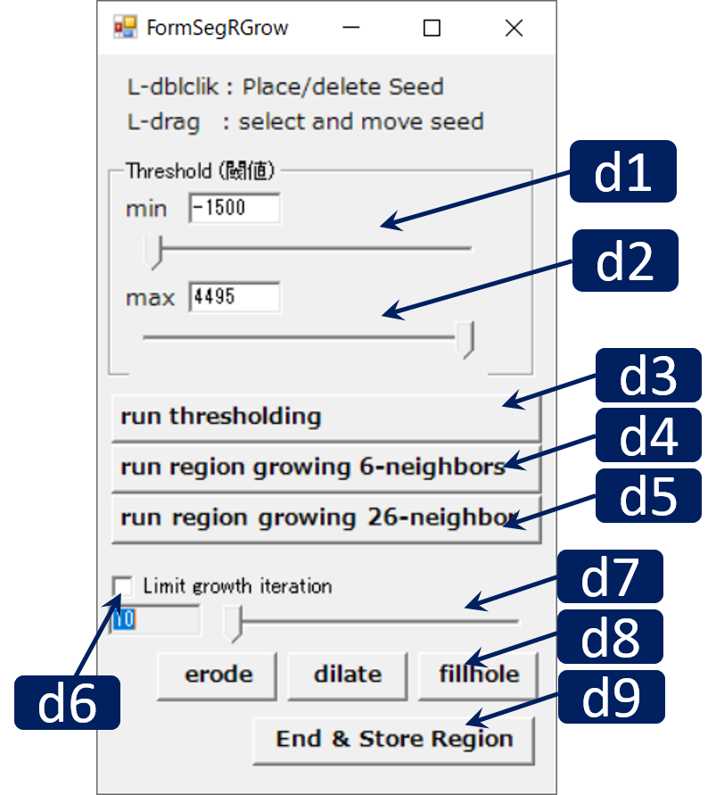

Region Growing and Thresholding

RoiPainter I/O Visualization Segmentation Download code (github)
Segmentation Region Growing and Thresholding
この "Segmentation Region Growing" モードでは，閾値法と領域拡張法による領域分割が行えます．
閾値法では，最小輝度値と最大輝度値を指定するとその範囲にある画素がすべて抽出されます．
領域拡張法では，複数のシード・最小輝度値・最大輝度値を指定すると，すべてのシードから与えた閾値の範囲で領域拡張を行います．
また，領域拡張の回数指定や，領域拡張後に収縮・膨張・穴埋め処理を施すことも可能です．
Workflow
- ツールの起動 : "Menu > ModeSwitch > Segmentation Region Growing" をクリック
- 閾値法を利用 : 最小輝度値・最大輝度値をダイアログより指定し， "Run Thresholding"ボタンをクリック
- 領域拡張法を利用 : 最小輝度値・最大輝度値をダイアログより指定し，メインWindowでShift+L double clickによりシードを配置，"Run Region Growing"ボタンをクリック
- 登録 : ダイアログ右下の"End & Store Region"を押と分割した領域が登録される．
Main Windowの操作方法
- マウス L/M/R ドラッグ : 視点の平行移動/ズーム/回転
- マウス ホイール : 切断面の前後移動
- Shift + Lダブルクリック : 切断面上にシード点を配置する（既存のシードをダブルクリックした場合はそれを削除）
- Shift + Lドラッグ : シードを移動する
- Ctrl + L ドラッグ : 曲面切断面の生成
- Ctrl + L クリック : 曲面切断面の削除
Dialogの操作方法
 d1. すべての前景・背景制約点を削除d2. グラフカットパラメータλを指定するスライダー．全体のコストE=E1 + λE2と表現される．E1は，各画素の前景・背景になりやすさを考慮したコスト（Unary term），E2は似た隣接画素に違うラベルを付ける際のコスト（Smoothing term）.
d3. グラフカット（watershedレベル（粗いレベル））実行
d4. グラフカット（画素レベル）実行
d5. 画素レベルのグラフカットを行う際，現在の前景領域の境界部分に厚みｎの帯状領域を生成する．その領域の厚みを指定する（厚み = 1画素，2画素，3画素）
d6. ここをチェックすると前景領域は前景として固定したまま，背景領域中に帯状領域を生成する．
d7. 領域分割をキャンセルする
d8. 作業終了ボタン．このボタンを押すと現在の前景領域が新しいMask IDとして登録される．